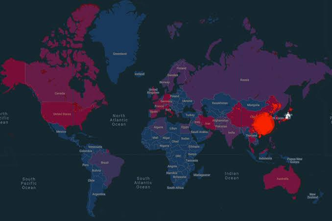

| Benha University Faculty of Engineering - Shoubra Academic year 2019-2020 |
 |
Starch covid-19 virus
The Chinese covid – 19 virus was established in Yuhan County,
in a market for the sale of wild animal meat

Then spread throughout the world with the whole of what came,
the World Health Organization announced that the virus has become a global epidemic because the year has become a small village and now we feel a terrible connection to the world to make the virus spread in the whole world
The COVID-19 pandemic has affected many technology,
area and technology establishments and authorities businesses worldwide,
main to reduced productiveness on a number of fields and applications.
It has also opened several new investment research strains in numerous governmental organizations around the sector.
How can laptop technological know-how make contributions to prevent the COVID-19 pandemic